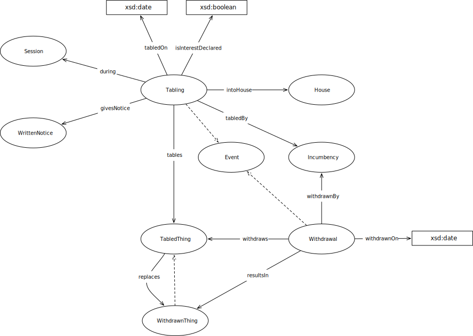

IRI: http://parliament.uk/ontologies/tabling/House
IRI: http://parliament.uk/ontologies/tabling/Incumbency
IRI: http://parliament.uk/ontologies/tabling/Session
IRI: http://parliament.uk/ontologies/tabling/TabledThing
IRI: http://parliament.uk/ontologies/tabling/Tabling
IRI: http://parliament.uk/ontologies/tabling/Withdrawal
IRI: http://parliament.uk/ontologies/tabling/WithdrawnThing
IRI: http://parliament.uk/ontologies/tabling/WrittenNotice
IRI: http://parliament.uk/ontologies/tabling/during
IRI: http://parliament.uk/ontologies/tabling/givesNotice
IRI: http://parliament.uk/ontologies/tabling/intoHouse
IRI: http://parliament.uk/ontologies/tabling/replaces
IRI: http://parliament.uk/ontologies/tabling/resultsIn
IRI: http://parliament.uk/ontologies/tabling/tabledBy
IRI: http://parliament.uk/ontologies/tabling/tables
IRI: http://parliament.uk/ontologies/tabling/withdraws
IRI: http://parliament.uk/ontologies/tabling/isInterestDeclared
IRI: http://parliament.uk/ontologies/tabling/tabledOn
IRI: http://parliament.uk/ontologies/tabling/withdrawnOn
This HTML document was obtained by processing the OWL ontology source code through LODE, Live OWL Documentation Environment, developed by Silvio Peroni.